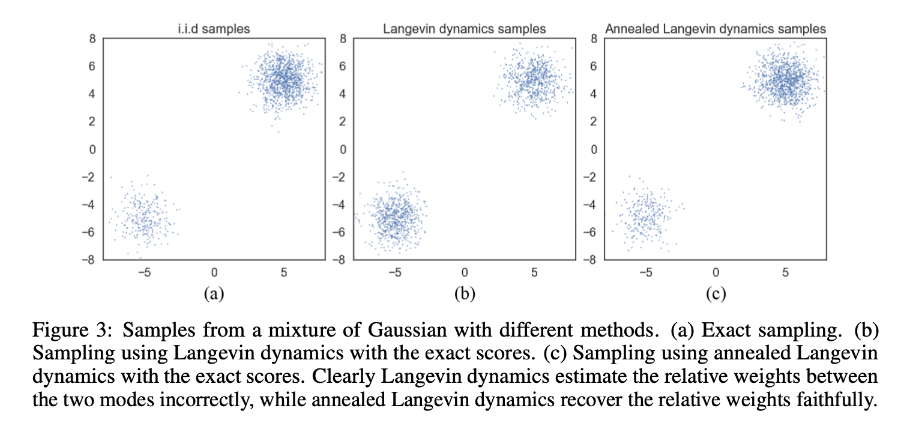
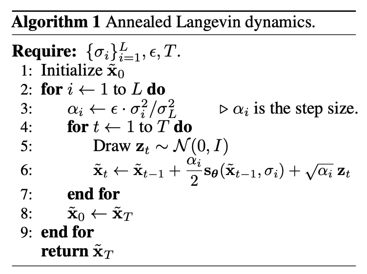

扩散模型理论·Score-Based Generative Models
\[ \newcommand{\E}{\mathbb E} \newcommand{\pdata}{p_\text{data}} \newcommand{\x}{\mathbf x} \newcommand{\v}{\mathbf v} \newcommand{\R}{\mathbb R} \newcommand{\T}{\mathsf T} \]
Brief Introduction
在从VAE到DDPM一文中，我们从 VAE 出发得到了 DDPM 的理论框架，发现 DDPM 可以看作是具有人为指定的后验分布（即前向过程）的层次化 VAE。这一角度的代表论文是 2015 年的 Sohl-Dickstein et al.[1] 和 2020 年的 DDPM[2]。与此同时，宋飏博士从 score matching + Langevin dynamics (SMLD)[3] 的角度出发得到了与 DDPM 本质相同的模型，称为 score-based generative models。两个角度出发点截然不同，但殊途同归，也是非常有意思了。
Score Function
所谓生成模型，就是希望对数据分布 \(\pdata(\x)\) 建模，使得我们能够从该分布中随意采样。假设我们构建了一个以 \(\theta\) 为参数的模型 \(f_\theta:\R^d\to\R\)，那么可用以下形式获得一个概率分布： \[ p_\theta(\x)=\frac{e^{-f_\theta(\x)}}{Z_\theta}\tag{1}\label{p} \] 这里称 \(f_\theta\) 为 Energy-Based Model (EBM)，其中 \(Z_\theta=\int_\x e^{-f_\theta(\x)}\mathrm{d}\x\) 是归一化因子。
训练生成模型无非就是希望极大化样本的对数似然： \[ \max_\theta\quad \E_{\pdata(\x)}[\log p_\theta(\x)] \] 但是直接计算对数似然存在一个问题：\(Z_\theta\) 通常是 intractable 的。为此，score-based generative models 使用 score function 来巧妙地回避开 \(Z_\theta\). Score function 定义为概率密度函数的对数的梯度：
\[ s(\x)=\nabla_\x\log p(\x) \] 它是一个向量场，指示了从当前点去到分布密度更大的地方的方向，如下图所示：

对 \(\eqref{p}\) 式而言，其 score function 为： \[ s_\theta(\x)=\nabla_\x \log p_\theta(\x)=\nabla_\x \log \frac{e^{-f_\theta(\x)}}{Z_\theta}=-\nabla_\x f_\theta(\x) \] 可以看见由于 \(Z_\theta\) 与 \(\x\) 无关，对 \(\x\) 求梯度后就直接变成零了！这启发我们直接对 score function 建模，即构建一个模型 \(s_\theta(\x)\)，用它去近似真实数据分布的 score function： \[ s_\theta(\x)\xrightarrow{\text{approximate}} s_\text{data}(\x)=\nabla_\x\log \pdata(\x) \] 此过程称作 score matching. 如果模型学习到了数据的 score function，也就相当于学到了数据分布。
Score Matching
为了训练模型 \(s_\theta(\x)\)，我们最小化它与 \(s_\text{data}(\x)\) 的均方距离（也即是模型给出的分布和数据分布之间的 Fisher Divergence）： \[ \min_\theta\quad J_\text{ESM}(\theta)=\frac{1}{2}\E_{\pdata(\x)}\left[\|s_\text{data}(\x)-s_\theta(\x)\|_2^2\right]\tag{2}\label{esm} \] 下标 ESM 是 Explicit Score Matching 的意思，explicit 是指该目标函数要求我们显式地知道 \(s_\text{data}(\x)\)，但这恰恰是我们不知道的。一个直观的想法是通过 Parzen 窗对其做非参估计，但是论文[5]的作者指出没有这个必要，可以使用一个分部积分去掉 \(s_\text{data}(\x)\)。具体而言，将 \(\eqref{esm}\) 式展开： \[ \begin{align} J_\text{ESM}(\theta)&=\frac{1}{2}\E_{\pdata(\x)}\left[\|s_\text{data}(\x)-s_\theta(\x)\|_2^2\right]\\ &=\E_{\pdata(\x)}\left[\frac{1}{2}\|s_\text{data}(\x)\|^2-s_\text{data}(\x)^T s_\theta(\x)+\frac{1}{2}\|s_\theta(\x)\|^2\right] \end{align} \] 第一项与 \(\theta\) 无关可以略去，最后一项可以直接优化，而中间项还需要再处理一下： \[ \begin{align} -\E_{\pdata(\x)}[s_\text{data}(\x)^Ts_\theta(\x)] &=-\int \pdata(\x) \sum_{i=1}^d s_\text{data}(\x)_is_\theta(\x)_i\mathrm{d}\x\\ &=-\sum_{i=1}^d \int \pdata(\x) \frac{\partial \log p_\text{data}(\x)}{\partial\x_i}s_\theta(\x)_i\mathrm{d}\x\\ &=-\sum_{i=1}^d\int \frac{\pdata(\x)}{\pdata(\x)}\frac{\partial\pdata(\x)}{\partial\x_i} s_\theta(\x)_i\mathrm{d}\x\\ &=-\sum_{i=1}^d\int \frac{\partial\pdata(\x)}{\partial\x_i} s_\theta(\x)_i \mathrm{d}\x \end{align} \]
一元函数分部积分
设 \(f(x),g(x)\) 是关于 \(x\) 的一元函数且具有连续导数，且下文出现的积分都存在，由于： \[[f(x)g(x)]'=f(x)g'(x)+g(x)f'(x)\] 两边同时在 \((-\infty,+\infty)\) 上积分，得到： \[\lim_{x\to+\infty}f(x)g(x)-\lim_{x\to-\infty}f(x)g(x)=\int_{-\infty}^{+\infty}f(x)g'(x)\mathrm{d}x+\int_{-\infty}^{+\infty}g(x)f'(x)\mathrm{d}x\] 即： \[\int_{-\infty}^{+\infty}f(x)g'(x)\mathrm{d}x=\left.[f(x)g(x)]\right|^{+\infty}_{-\infty}-\int_{-\infty}^{+\infty}g(x)f'(x)\mathrm{d}x\] 扩展到多元函数
设 \(f(\x),g(\x)\) 是关于 \(\x\) 的多元标量函数，固定除 \(\x_i\) 外的其他变元，所有求导均为对 \(\x_i\) 的偏导，那么上述推导依旧使用，因此有结论： \[\begin{align}\int_{-\infty}^{+\infty}f(\x)\frac{\partial{g(\x)}}{\partial\x_i}\mathrm{d}\x&=\lim_{\x_i\to+\infty}f(\ldots,\x_i,\ldots)g(\ldots,\x_i,\ldots)\\&-\lim_{\x_i\to-\infty}f(\ldots,\x_i,\ldots)g(\ldots,\x_i,\ldots)\\&-\int_{-\infty}^{+\infty}g(\x)\frac{\partial{f(\x)}}{\partial\x_i}\mathrm{d}\x\end{align}\]
应用分部积分，并且假设 \(\pdata(\ldots,\x_i,\ldots)s_\theta(\ldots,\x_i,\ldots)_i\to 0(\x_i\to\pm\infty)\)，那么中间项变成： \[ \begin{align} -\sum_{i=1}^d\int \frac{\partial\pdata(\x)}{\partial\x_i} s_\theta(\x)_i \mathrm{d}\x &=\sum_{i=1}^d\int \frac{\partial s_\theta(\x)_i}{\partial\x_i} \pdata(\x) \mathrm{d}\x\\ &=\int \pdata(\x) \sum_{i=1}^d \frac{\partial s_\theta(\x)_i}{\partial\x_i} \mathrm{d}\x\\ &=\E_{\x\sim\pdata}\left[\sum_{i=1}^d \frac{\partial s_\theta(\x)_i}{\partial\x_i}\right] \end{align} \] 于是最终优化目标为： \[ J_\text{ISM}(\theta)=\E_{\pdata(\x)}\left[\sum_{i=1}^d \left(\frac{\partial s_\theta(\x)_i}{\partial\x_i}+\frac{1}{2}s_\theta(\x)_i^2\right)\right]\tag{3}\label{ism} \] 下标 ISM 指 Implicit Score Matching，与 ESM 相对应。如果用 \(s_\theta(\x)\) 的 Jacobian 矩阵 \(\nabla_\x s_\theta(\x)\) 来表示，就是： \[ J_\text{ISM}(\theta)=\E_{\pdata(\x)}\left[\text{tr}\left({\nabla_\x s_\theta(\x)}\right)+\frac{1}{2}\|s_\theta(\x)\|^2\right]\tag{3'}\label{ism'} \] 当然，由于 \(s_\theta(\x)\) 本身是 \(\log p_\theta(\x)\) 的梯度，所以前者的 Jacobian 矩阵，也是后者的 Hessian 矩阵，所以也可以写成： \[ J_\text{ISM}(\theta)=\E_{\pdata(\x)}\left[\text{tr}\left({\nabla^2_\x \log p_\theta(\x)}\right)+\frac{1}{2}\|\nabla_\x\log p_\theta(\x)\|^2\right]\tag{3''}\label{ism''} \] 只是记号上的不同罢了。
可以看见，现在的优化目标期望里面已经没有 \(\pdata(\x)\) 或 \(s_\text{data}(\x)\) 了，而期望本身通过训练过程的采样来近似。
当然，上述推导过程要成立也有一些条件，比如用分部积分要求 \(s_\theta(\x)\) 和 \(\pdata(\x)\) 可导，出现的所有期望要存在，以及上文已经提到过的 \(\pdata(\x)s_\theta(\x)\to 0\ (\Vert\x\Vert \to\infty)\). 好在这些条件都容易满足。
Denoising Score Matching
上文中，我们使用分部积分巧妙地去掉了 \(s_\text{data}(\x)=\nabla_\x \log\pdata(\x)\)，避免了对数据分布做非参估计，但是代价是引入了 \(\text{tr}\left(\nabla_\x s_\theta(\x)\right)\)，意味着我们还要对 score function 求导（即求 \(\log\pdata(\x)\) 的 Hessian 矩阵）。虽然这个操作可以通过 torch.autograd.grad() 实现，但反向传播次数增加了 \(d\) 倍（\(d\) 为数据维数），在深度网络和高维数据的场景下效率很差。那如果我们做非参估计会怎样呢？考虑使用带高斯核的 Parzen 窗做非参估计（也称核密度估计，Kernel Density Estimation, KDE）： \[
\begin{align}
&q_\sigma(\tilde\x)=\frac{1}{N}\sum_{i=1}^N K_\sigma\left(\tilde\x-\x_i\right)\\
&K_\sigma(\tilde\x-\x_i)=\frac{1}{(2\pi)^{d/2}\sigma^d}e^{-\frac{1}{2\sigma^2}\|\tilde\x-\x_i\|_2^2}
\end{align}
\] 其中，当 \(\sigma\to0\) 时，高斯核趋向于 Dirac delta 函数，\(q_\sigma(\x)\to \pdata(\x)\).
由于上述 Parzen 窗的本质和用高斯噪声扰动数据是一致的： \[ \begin{align} &q_\sigma(\tilde\x)=\int_\x \pdata(\x) q_\sigma(\tilde\x\vert \x) \mathrm{d}\x\\ &q_\sigma(\tilde\x\vert\x)=K_\sigma(\tilde\x-\x)=\frac{1}{(2\pi)^{d/2}\sigma^d}e^{-\frac{1}{2\sigma^2}\|\tilde\x-\x\|_2^2} \end{align} \] 所以我们现在干的事其实和 denoising autoencoders 干的事是一样的，这也是为什么论文[6]的标题是「score matching 与 denoising autoencoders 之间的联系」。方便起见，下文都站在加噪扰动视角而非核密度估计的视角叙述。
我们在扰动后的数据分布上做 score matching，即将 \(\eqref{esm}\) 式中的 \(\pdata\) 换成 \(q_\sigma\)： \[ \quad J_{\text{ESM}{q_\sigma}}(\theta)=\frac{1}{2}\E_{q_\sigma(\tilde\x)}\left[\|\nabla_\tilde\x\log q_\sigma(\tilde\x)-s_\theta(\tilde\x)\|_2^2\right] \] 可是 \(\nabla_\tilde\x\log q_\sigma(\tilde\x)\) 还是无法处理。注意到由于 \(q_\sigma(\tilde\x\vert\x)\) 是高斯核，\(\nabla_\tilde\x\log q_\sigma(\tilde\x\vert \x)\) 是可以直接计算的： \[ \nabla_{\tilde\x}\log q_\sigma(\tilde \x\vert\x)=\frac{1}{\sigma^2}(\x-\tilde \x)\tag{4}\label{score-gauss} \] 所以我们希望能把期望里面的 \(\nabla_\tilde\x\log q_\sigma(\tilde\x)\) 变换成 \(\nabla_\tilde\x\log q_\sigma(\tilde\x\vert \x)\). 把平方打开，第一个平方项与 \(\theta\) 无关扔掉，另一个平方项保留，着重考虑中间项： \[ \begin{align} -\E_{q_\sigma(\tilde\x)}[\langle\nabla_{\tilde\x}\log q_\sigma(\tilde\x),s_\theta(\tilde\x)\rangle] &=-\int_{\tilde\x} q_\sigma(\tilde\x) \left\langle \frac{\nabla_{\tilde\x}q_\sigma(\tilde\x)}{q_\sigma(\tilde\x)},s_\theta(\tilde\x) \right\rangle \mathrm{d}\tilde\x\\ &=-\int_{\tilde\x}\bigg\langle \nabla_{\tilde\x}{\color{purple}{q_\sigma(\tilde\x)}},s_\theta(\tilde\x) \bigg\rangle\mathrm{d}\tilde\x\\ &=-\int_{\tilde\x}\left\langle \nabla_{\tilde\x}{\color{purple}{\int_\x \pdata(\x)q_\sigma(\tilde\x\vert \x)\mathrm{d}\x}},s_\theta(\tilde\x) \right\rangle\mathrm{d}\tilde\x\\ &=-\int_{\tilde\x}\left\langle \int_\x \pdata(\x){\color{green}{\nabla_{\tilde\x}q_\sigma(\tilde\x\vert \x)}}\mathrm{d}\x,s_\theta(\tilde\x) \right\rangle\mathrm{d}\tilde\x\\ &=-\int_{\tilde\x}\left\langle \int_\x \pdata(\x){\color{green}{q_\sigma(\tilde\x\vert \x)\nabla_{\tilde\x}\log q_\sigma(\tilde\x\vert \x)}}\mathrm{d}\x,s_\theta(\tilde\x) \right\rangle\mathrm{d}\tilde\x\\ &=-\int_{\tilde\x}\int_\x \pdata(\x)q_\sigma(\tilde\x\vert \x)\bigg\langle {\nabla_{\tilde\x}\log q_\sigma(\tilde\x\vert \x)},s_\theta(\tilde\x) \bigg\rangle\mathrm{d}\x\mathrm{d}\tilde\x\\ &=-\E_{q_\sigma(\tilde \x,\x)}[\langle {\nabla_{\tilde\x}\log q_\sigma(\tilde\x\vert \x)},s_\theta(\tilde\x)\rangle]\\ \end{align} \] 这样我们就得到了变换后的目标函数： \[ J'=\E_{q_\sigma(\tilde\x)}\left[\frac{1}{2}\|s_\theta(\tilde\x)\|^2\right]-\E_{q_\sigma(\tilde\x,\x)}\left[\left\langle\nabla_{\tilde\x}\log q_\sigma(\tilde\x\vert \x),s_\theta(\tilde\x)\right\rangle\right] \] 看上去有点丑，不妨配凑回平方的形式，即是论文中提出的 Denoising Score Matching (DSM) 优化目标： \[ J_\text{DSM}(\theta)=\E_{q_\sigma(\tilde\x,\x)}\left[\frac{1}{2}\left\|\nabla_{\tilde\x}\log q_\sigma(\tilde\x\vert \x)-s_\theta(\tilde\x)\right\|^2 \right]=\E_{q_\sigma(\tilde\x,\x)}\left[\frac{1}{2}\left\|\frac{\x-\tilde\x}{\sigma^2} -s_\theta(\tilde\x)\right\|^2 \right]\tag{5}\label{dsm} \]
直观上，\(\x-\tilde\x\) 指出了加噪数据 \(\tilde\x\) 回到无噪声数据的移动方向，这正与 score function 的定义相符。
Sliced Score Matching
本节其实与以去噪为基础的扩散模型关系不大，但为了完整性，同时考虑到它也是宋飏大佬的工作，就顺便读了读论文。
Denoising score matching 虽然解决了原始 score matching 无法 scale 到深度网络和高维数据的问题，但是本身也有两个问题：
- 只能学习带有噪声的分布
- 性能对 noise level 很敏感
而宋飏等人在 2020 年提出的 sliced score matching[7] 是另一种解决方法，其思想是把 \(s_\theta(\x)\) 随机投影到向量 \(\mathbf v\) 上，只在投影的方向上做匹配。具体而言，\(\eqref{esm}\) 式改写作： \[ J_\text{SSM(explicit)}=\frac{1}{2}\E_{p_{\v}(\v)}\E_{\pdata(\x)}\left[\left(\v^\T s_\text{data}(\x)-\v^\T s_\theta(\x)\right)^2\right] \] 并要求 \(\E_{p_\v(\v)}[\v\v^\T]\succ 0\) 且 \(\E_{p_\v(\v)}\left[\Vert\v\Vert_2^2\right]<\infty\). 常用的 \(p_\v(\v)\) 包括标准多元正态分布 \(\mathcal N(0,\mathbf I)\)、多元 Rademacher 分布（\(\{\pm 1\}^d\) 上的均匀分布）、超球面 \(\mathbb S^{d-1}\) 上的均匀分布等。
与原始 score matching 类似，我们可以用分部积分去掉 \(s_\text{data}(\x)\). 同样只需着重考虑中间项： \[ \begin{align} -\E_{p_{\v}(\v)}\left[\E_{\pdata(\x)}\left[\left(\v^\T s_\text{data}(\x)\right)\left(\v^\T s_\theta(\x)\right)\right]\right] &=-\E_{p_{\v}(\v)}\left[\int\pdata(\x)\left(\v^\T s_\text{data}(\x)\right)\left(\v^\T s_\theta(\x)\right)\mathrm{d}\x\right]\\ &=-\E_{p_{\v}(\v)}\left[\int\pdata(\x)\left(\v^\T\nabla_\x \log p_\text{data}(\x)\right)\left(\v^\T s_\theta(\x)\right)\mathrm{d}\x\right]\\ &=-\E_{p_{\v}(\v)}\left[\int\left(\v^\T\nabla_\x p_\text{data}(\x)\right)\left(\v^\T s_\theta(\x)\right)\mathrm{d}\x\right]\\ &=-\E_{p_{\v}(\v)}\left[\int\left(\sum_{i=1}^d v_i\frac{\partial\pdata(\x)}{\partial\x_i}\right)\left(\v^\T s_\theta(\x)\right)\mathrm{d}\x\right]\\ &=-\E_{p_{\v}(\v)}\left[\sum_{i=1}^d v_i\int\frac{\partial\pdata(\x)}{\partial\x_i}\left(\v^\T s_\theta(\x)\right)\mathrm{d}\x\right]\\ \end{align} \] 利用多元函数分部积分结论，有： \[ \begin{align} &-\E_{p_{\v}(\v)}\left[\sum_{i=1}^d v_i{\color{dodgerblue}{\int\frac{\partial\pdata(\x)}{\partial\x_i}\left(\v^\T s_\theta(\x)\right)\mathrm{d}\x}}\right]\\ =&-\E_{p_{\v}(\v)}\left[\sum_{i=1}^d v_i\left({\color{dodgerblue}{\lim_{\x_i\to+\infty}\pdata(\x)\left(\v^\T s_\theta(\x)\right)-\lim_{\x_i\to-\infty}\pdata(\x)\left(\v^\T s_\theta(\x)\right)-\int\left(\frac{\partial\left(\v^\T s_\theta(\x)\right)}{\partial\x_i}\right)\pdata(\x)\mathrm{d}\x}}\right)\right]\\ =&-\E_{p_{\v}(\v)}\left[\sum_{i=1}^d v_i\left(\lim_{\x_i\to+\infty}\pdata(\x)\left(\v^\T s_\theta(\x)\right)-\lim_{\x_i\to-\infty}\pdata(\x)\left(\v^\T s_\theta(\x)\right)\right)\right]+\E_{p_\v(\v)}\left[\sum_{i=1}^d v_i\pdata(\x)\left(\int\v^\T\frac{\partial s_\theta(\x))}{\partial\x_i}\mathrm{d}\x\right)\right]\\ =&-\E_{p_{\v}(\v)}\left[\sum_{i=1}^d v_i\left(\lim_{\x_i\to+\infty}\pdata(\x)\left(\v^\T s_\theta(\x)\right)-\lim_{\x_i\to-\infty}\pdata(\x)\left(\v^\T s_\theta(\x)\right)\right)\right]+\E_{p_\v(\v)}\left[\int\pdata(\x)\left(\sum_{i=1}^d v_i\v^\T \frac{\partial s_\theta(\x))}{\partial\x_i}\right)\mathrm{d}\x\right]\\ =&-\E_{p_{\v}(\v)}\left[\sum_{i=1}^d v_i\left(\lim_{\x_i\to+\infty}\pdata(\x)\left(\v^\T s_\theta(\x)\right)-\lim_{\x_i\to-\infty}\pdata(\x)\left(\v^\T s_\theta(\x)\right)\right)\right]+\E_{p_\v(\v)}\left[\E_{\pdata(\x)}\left[\v^\T \nabla_\x s_\theta(\x)\v\right]\right]\\ \end{align} \] 后面那项是我们想要的，现在需要证明前面那项等于 0. 在原始 score matching 中，我们是通过假设 \(\pdata(\x)s_\theta(\x)\to 0\ (\Vert\x\Vert\to \infty)\) 完成的，但是现在多了个 \(\v\) 来搅局。不过好在最后要对 \(p_\v(\v)\) 求期望，所以我们依旧能够期待前项可以等于 0. 利用绝对值不等式把 \(\v\) 拆出来，并利用柯西不等式，我们有： \[ \begin{align} &\left|\E_{p_{\v}(\v)}\left[\sum_{i=1}^d v_i\left(\lim_{\x_i\to+\infty}\pdata(\x)\left(\v^\T s_\theta(\x)\right)-\lim_{\x_i\to-\infty}\pdata(\x)\left(\v^\T s_\theta(\x)\right)\right)\right]\right|\\ \leq&\left|\E_{p_{\v}(\v)}\left[\sum_{i=1}^d v_i\left(\lim_{\x_i\to+\infty}\pdata(\x)\left(\v^\T s_\theta(\x)\right)\right)\right]\right|+\left|\E_{p_\v(\v)}\left[\sum_{i=1}^d v_i\left(\lim_{\x_i\to-\infty}\pdata(\x)\left(\v^\T s_\theta(\x)\right)\right)\right]\right|\\ \leq&\sum_{i=1}^d \lim_{\x_i\to+\infty}\sum_{j=1}^d\E_{p_\v(\v)}\left[\left| v_iv_j \right|\right]\left|\pdata(\x){s_\theta(\x)}_j\right|+\sum_{i=1}^d \lim_{\x_i\to-\infty}\sum_{j=1}^d\E_{p_\v(\v)}\left[\left| v_iv_j \right|\right]\left|\pdata(\x){s_\theta(\x)}_j\right|\\ \leq& \sum_{i=1}^d\lim_{\x_i\to+\infty}\sum_{j=1}^d\sqrt{\E_{p_\v(\v)}v_i^2\E_{p_\v(\v)}v_j^2}\left|\pdata(\x){s_\theta(\x)}_j\right|+\sum_{i=1}^d\lim_{\x_i\to-\infty}\sum_{j=1}^d\sqrt{\E_{p_\v(\v)}v_i^2\E_{p_\v(\v)}v_j^2}\left|\pdata(\x){s_\theta(\x)}_j\right|\\ =&0 \end{align} \] 柯西不等式的作用只是为了用上 \(\E_{p_\v(\v)}\left[\Vert\v\Vert^2_2\right]<\infty\) 的假设条件，进而有限项乘以无穷小依旧是无穷小。
于是我们就得到了 SSM 的 implicit 形式： \[ J_\text{SSM}=\E_{p_\v(\v)}\E_{\pdata(\x)}\left[\v^\T \nabla_\x s_\theta(\x)\v+\frac{1}{2}\left(\v^\T s_\theta(\x)\right)^2\right]\tag{6}\label{ssm} \] 特别地，当 \(p_\v(\v)\) 是标准多元正态分布或多元 Rademacher 分布时，后面一项可以直接积出来：\(\E_{p_\v(\v)}\left[\left(\v^\T s_\theta(\x)\right)^2\right]=\Vert s_\theta(\x)\Vert_2^2\)，即： \[ J_\text{SSM-VR}=\E_{\pdata(\x)}\left[\E_{p_\v(\v)}\left[\v^\T \nabla_\x s_\theta(\x)\v\right]+\frac{1}{2}\left\|s_\theta(\x)\right\|^2_2\right]\tag{6'}\label{ssm-vr} \] 下标 VR 是 Variance Reduction 的意思，因为直接计算相比采样近似减小了方差，效果更好。
说了这么多，\(\eqref{ssm}\) 式中不还是有 \(\nabla_\x s_\theta(\x)\) 吗，怎么就减少了计算量呢？注意 \(\v^\T \nabla_\x s_\theta(\x)\v=\nabla_\x(\v^\T s_\theta(\x))\v\)，所以我们可以先计算出标量 \(\v^\T s_\theta(\x)\)，然后对 \(\x\) 求梯度，最后乘上 \(\v\)，这样反向传播次数就是直接计算 \(\nabla_\x s_\theta(\x)\) 的 \(1/d\) 了。
另外，每次采样的投影向量个数也是影响效率的重要因素。采样越多，近似越准确，计算量也越大，所以这是一个 trade-off. 论文作者实验发现每次采样 1 个向量效果就不错了。
Langevin Dynamics
在模型学到了 score function 之后，我们怎么从中采样呢？直观上，score function \(\nabla_\x\log p(\x)\) 是当前点指向密度更大处的方向，所以我们可以先随机初始化一个位置，然后不断沿着 score function 的方向走，最后就能走到密度的极大值点——这个过程很像梯度下降，只不过梯度下降是在参数空间中进行，而采样是在数据空间中进行： \[ \x_{k}\gets \x_{k-1}+\alpha \nabla_\x \log p(\x_{k-1}),\quad k=1,\ldots,K \] 然而这样做每次都到达 \(p(\x)\) 的极大值点，并不是我们希望的从 \(p(\x)\) 采样。不过基于类似的思想，Langevin dynamics 告诉我们，只需要添加一个高斯噪声项，就可以化优化为采样： \[ \begin{align} &\x_0\sim \pi(\x)\\ &\x_{k}\gets\x_{k-1}+\frac{\epsilon}{2}\nabla_\x \log p(\x_{k-1})+\sqrt{\epsilon} \mathbf z_k,\quad k=1,\ldots,K \end{align}\tag{7}\label{langevin} \] 其中 \(\mathbf z_k\sim \mathcal N(0,\mathbf I)\). 可以证明，当 \(\epsilon\to 0\) 且 \(K\to\infty\) 时，\(\x_K\) 的分布收敛到 \(p(\x)\).

Noise Perturbations
截至目前，我们用 score matching 训练模型预测 score function，然后通过 Langevin dynamics 采样。但这个做法在实际中很难 work. 究其原因，罪魁祸首在于 manifold hypothesis，即真实情况下的数据分布在高维空间中的低维流形上。换句话说，空间中绝大部分都是低密度区域。这将导致两个问题：
首先，从训练层面上讲，低密度区域数据量少（甚至没有），无法较好地训练模型，导致模型预测的 score function 不准确：

又由于我们的初始化点极有可能落在低密度区域中，所以不准确的 score function 将对采样过程产生极大的影响。
其次，即便 score function 能被准确预测，但对于被低密度区域隔开的两个分布来说，Langevin dynamics 很难收敛到正确的分布（尽管 Langevin dynamics 在理论上能收敛到正确的分布，但可能需要很小的步长和很多的步数），如图所示：

真实情况是右上的正态分布权重更大，但中图的采样结果显示两个分布被予以了几乎相同的权重。
宋飏等人提出解决这两个问题的办法是：给数据添加高斯噪声，并且随着 Langevin dynamics 的进行逐渐减小 noise level（退火）。添加噪声后的数据遍布整个空间，填充了低密度区域，因此模型能够得到更多的监督信号，Langevin dynamics 也能更快的收敛到高密度区域；同时，逐渐减小的噪声使得带噪分布最终收敛到真实分布，因此也能保证采样质量不受影响。

形式化地说，我们确定一个逐渐减小的噪声序列 \(\{\sigma_i\}_{i=1}^L\)，那么对应 \(\sigma_i\) 的噪声扰动后的数据分布为： \[ q_{\sigma_i}(\x)=\int\pdata(\mathbf t) \mathcal N\left(\x;\mathbf t,\sigma_i^2\mathbf I\right) \mathrm{d}\mathbf t \] 我们用一个神经网络（称作 Noise Conditional Score Networks，NCSN）同时预测不同 noise level 的 score function，即： \[ s_\theta(\x, \sigma_i)\xrightarrow{\text{approximate}} \nabla_\x\log q_{\sigma_i}(\x) \] 于是训练目标就是对每一个 noise level 做 score matching： \[ \mathcal L\left(\theta,\{\sigma_i\}_{i=1}^L\right)=\frac{1}{L}\sum_{i=1}^L \lambda(\sigma_i)\E_{q_{\sigma_i}(\x)}\left[\|\nabla_\x\log q_{\sigma_i}(\x)-s_\theta(\x,\sigma_i) \|^2\right] \] 其中 \(\lambda(\sigma_i)\) 是给不同 noise level 加的权重。
考虑到 denoising score matching 正好符合现在的加噪去噪设定，所以我们选择它而非 sliced score matching. 根据前文的叙述，训练目标变换为： \[ \begin{align} \mathcal L\left(\theta,\{\sigma_i\}_{i=1}^L\right)&=\frac{1}{L}\sum_{i=1}^L \lambda(\sigma_i)\E_{\pdata(\x)}\E_{q_{\sigma_i}(\tilde\x\vert\x)}\left[\frac{1}{2}\left\|\nabla_{\tilde\x}\log q_{\sigma_i}(\tilde \x\vert\x) -s_\theta(\tilde\x,\sigma_i)\right\|^2 \right]\\ &=\frac{1}{L}\sum_{i=1}^L \lambda(\sigma_i)\E_{\pdata(\x)}\E_{q_{\sigma_i}(\tilde\x\vert\x)}\left[\frac{1}{2}\left\|\frac{\x-\tilde\x}{\sigma_i^2} -s_\theta(\tilde\x,\sigma_i)\right\|^2 \right] \end{align}\tag{8}\label{ncsn} \] 其中 \(q_{\sigma_i}(\tilde\x\vert \x)=\mathcal N\left(\tilde \x;\x,\sigma_i^2\mathbf I\right)\).
怎么选取权重 \(\lambda(\sigma_i)\) 呢？根据作者经验，一般有 \(\Vert s_\theta(\x,\sigma)\Vert_2\propto 1/\sigma\)，所以为了各个 noise level 的损失大致相同，取 \(\lambda(\sigma_i)=\sigma_i^2\).
训练完成后，我们就可以随机初始化采样点，逐渐减小 noise level，在每个 level 下通过 Langevin dynamics 以步长 \(\alpha_i\) 更新若干步，最终生成新的数据。算法流程图如下所示：

其中步长设置为 \(\alpha_i=\epsilon\cdot\sigma_i^2/\sigma_L^2\propto \sigma_i^2\) 的动机是保证不同 noise level 下 Langevin dynamics 的信噪比 \(\frac{\alpha_i s_\theta(\x,\sigma_i)}{2\sqrt{\alpha_i}\mathbf z}\) 的模长固定。
这一代的 NCSN 已然能与 GAN 媲美，但局限在 32x32 的大小。在后续的工作[4]中，宋飏等人探索了更多的技巧，进一步地提升了图像生成质量，并能稳定生成 256x256 的图片。这些技巧包括：
选择 \(\sigma_1\) 与训练数据中两两之间的最大欧氏距离差不多大。
选择 \(\{\sigma_i\}_{i=1}^L\) 为公比为 \(\gamma\) 的等比序列，且 \[ \Phi\left(\sqrt{2d}(\gamma-1)+3\gamma\right)-\Phi\left(\sqrt{2d}(\gamma-1)-3\gamma\right)\approx 0.5 \]
将 NCSN 参数化为 \(s_\theta(\x,\sigma)=s_\theta(\x)/\sigma\)，其中 \(s_\theta(\x)\) 是一个无条件的网络。
选择 \(T\)（每个 noise level 下 Langevin dynamics 的步数）在可承受范围尽可能大，并选择 \(\epsilon\)（Langevin dynamics 里与步长有关的参数）使得一个复杂的式子（懒得抄了）约等于 \(1\).
在测试（采样）的时候使用 EMA.
具体内容和分析本文不再叙述，感兴趣的读者可以去看论文。
Connection to DDPM
在引言里，我们说 SMLD 和 DDPM 本质是相同的，现在来看看为什么。
Forward Process
DDPM 与 SMLD 的加噪过程分别为： \[ \begin{align} &q(\x_t\vert \x_0)=\mathcal N\left(\x_t;{\color{darkred}{\sqrt{\bar\alpha_t}\x_0}},(1-\bar\alpha_t)\mathbf I\right)&&\text{DDPM}\\ &q_{\sigma_i}(\tilde\x\vert \x)=\mathcal N\left(\tilde \x;{\color{darkred}{\x}},\sigma_i^2\mathbf I\right)&&\text{SMLD} \end{align} \] 可见它们都是选择高斯分布的转移形式，但对于均值处是否加权略有分歧。DDPM 为均值加权，效果就是随着扩散过程的进行，数据的均值往 \(\mathbf 0\) 移动，并且一直维持着有限的方差且越来越接近 \(\mathbf I\)，最后服从 \(\mathcal N(\mathbf 0,\mathbf I)\)；而 SMLD 均值没有加权，所以无论怎么加噪数据的中心始终在原本的位置，因此加噪过程其实是依靠增大 \(\sigma_i^2\) 来让数据弥散到整个空间。正因如此，在之后的文章中我们可以看到，宋飏等人将前者称为 Variance Preserving，而后者称为 Variance Exploding. 但其实这个差别不是很重要，如果把 SMLD 的均值也加上权重，并不影响任何推导过程。
为进一步探索二者的关系，考虑对 \(q(\x_t\vert \x_0)=\mathcal N\left(\x_t;\sqrt{\bar\alpha_t}\x_0,(1-\bar\alpha_t)\mathbf I\right)\) 求 score function： \[ \begin{align} \nabla_{\x_t}\log q(\x_t\vert\x_0)&=-\frac{1}{2(1-\bar\alpha_t)}\nabla_{\x_t}\left\|\x_t-\sqrt{\bar\alpha_t}\x_0\right\|^2\\ &=-\frac{1}{1-\bar\alpha_t}\left(\x_t-\sqrt{\bar\alpha_t}\x_0\right)\\ &=-\frac{1}{1-\bar\alpha_t}\left(\sqrt{\bar\alpha_t}\x_0+\sqrt{1-\bar\alpha_t}\epsilon-\sqrt{\bar\alpha_t}\x_0\right)\\ &=-\frac{\epsilon}{\sqrt{1-\bar\alpha_t}} \end{align}\tag{9}\label{qscore} \] 我们发现，DDPM 中添加的噪声 \(\epsilon\)，其实就是 score function 的反方向。因此，DDPM 预测噪声和 SMLD 预测 score function 的模型之间有如下关系： \[ s_\theta(\x_t,t)=-\frac{1}{\sqrt{1-\bar\alpha_t}}\epsilon_\theta(\x_t,t)\tag{10}\label{score-eps} \] 为了看得更明显，将 \(\eqref{qscore},\eqref{score-eps}\) 式代入 DDPM 的损失函数得： \[ \begin{align} \mathcal L_\text{ddpm}&=\E_{t,\x_0,\epsilon}\left[\left\|\epsilon-\epsilon_\theta\left(\x_t,t\right) \right\|^2\right]\\ &=\E_{t,\x_0,\epsilon}\left[\left\|-\sqrt{1-\bar\alpha_t}\nabla_{\x_t}\log q(\x_t\vert \x_0)+\sqrt{1-\bar\alpha_t}s_\theta\left(\x_t,t\right) \right\|^2\right]\\ &=\E_{t,\x_0,\epsilon}\left[(1-\bar\alpha_t)\left\|\nabla_{\x_t}\log q(\x_t\vert \x_0)-s_\theta\left(\x_t,t\right) \right\|^2\right] \end{align} \] 为了方便比较，将其改写一下： \[ \frac{1}{T}\sum_{t=1}^T(1-\bar\alpha_t)\E_{\pdata(\x_0)}\E_{q(\x_t\vert \x_0)}\left[\left\|\nabla_{\x_t} \log q(\x_t\vert \x_0)-s_\theta\left(\x_t,t\right) \right\|^2 \right]\tag{11}\label{ddpm} \] 对比 \(\eqref{ncsn}\) 式： \[ \frac{1}{L}\sum_{i=1}^L \lambda(\sigma_i)\E_{\pdata(\x)}\E_{q_{\sigma_i}(\tilde\x\vert\x)}\left[\frac{1}{2}\left\|\nabla_{\tilde\x}\log q_{\sigma_i}(\tilde \x\vert\x) -s_\theta(\tilde\x,\sigma_i)\right\|^2 \right]\tag{8} \] 可以看到，\(\eqref{ddpm}\) 式和 \(\eqref{ncsn}\) 式完全相同！甚至连系数都保持了一致：
- 根据 \(\eqref{qscore}\) 式有：\(1-\bar\alpha_t\propto 1/\E[\Vert\nabla_{\x_t}\log q(\x_t\vert \x_0)\Vert^2]\)
- 根据 \(\eqref{score-gauss}\) 式有：\(\lambda(\sigma_i)=\sigma_i^2\propto1/\E[\Vert\nabla_{\tilde\x}\log q_\sigma(\tilde \x\vert\x)\Vert^2]\)
Reverse Process
虽然 DDPM 和 SMLD 在加噪过程和优化目标上保持了惊人的一致，但是在生成过程上还是有所区别。对于 DDPM，我们构建逆向的马尔可夫链，每一步从 \(p_\theta(\x_{t-1}\vert\x_t)\) 中采样： \[ \begin{align} &p_\theta(\x_{t-1}\vert \x_t)=\mathcal N(\x_{t-1}; \mu_\theta(\x_t,t),\sigma_t^2\mathbf I)\\ &\mu_\theta(\x_t,t)=\frac{1}{\sqrt{\alpha_t}}\left(\x_t-\frac{1-\alpha_t}{\sqrt{1-\bar\alpha_t}}\epsilon_\theta(\x_t,t)\right)=\frac{1}{\sqrt{\alpha_t}}\left(\x_t+(1-\alpha_t)s_\theta(\x_t,t)\right) \end{align} \] 或写作： \[ \x_{t-1}=\frac{1}{\sqrt{\alpha_t}}(\x_t+(1-\alpha_t)s_\theta(\x_t,t))+\sigma_t\mathbf z_t \] 而对于 SMLD，我们在每一个 noise level \(\sigma_t\) 下都进行 \(K\) 步的 Langevin dynamics 游走： \[ \x_t^{k}\gets\x_t^{k-1}+\frac{\epsilon_t}{2}s_\theta(\x_t^{k-1},\sigma_{t})+\sqrt{\epsilon_t} \mathbf z_t^k,\quad k=1,\ldots,K \] 上述过程重复 \(T\) 次。根据 Predictor-Corrector 的思想，可以认为 DDPM 只做了相邻时间步之间的 prediction，没有同一时间步内的 correction；SMLD 则只有同一时间步内的 correction，而没有相邻时间步之间的 prediction.
References
- Sohl-Dickstein, Jascha, Eric Weiss, Niru Maheswaranathan, and Surya Ganguli. Deep unsupervised learning using nonequilibrium thermodynamics. In International Conference on Machine Learning, pp. 2256-2265. PMLR, 2015. ↩︎
- Ho, Jonathan, Ajay Jain, and Pieter Abbeel. Denoising diffusion probabilistic models. Advances in Neural Information Processing Systems 33 (2020): 6840-6851. ↩︎
- Song, Yang, and Stefano Ermon. Generative modeling by estimating gradients of the data distribution. Advances in Neural Information Processing Systems 32 (2019). ↩︎
- Song, Yang, and Stefano Ermon. Improved techniques for training score-based generative models. Advances in neural information processing systems 33 (2020): 12438-12448. ↩︎
- Hyvärinen, Aapo, and Peter Dayan. Estimation of non-normalized statistical models by score matching. Journal of Machine Learning Research 6, no. 4 (2005). ↩︎
- Vincent, Pascal. A connection between score matching and denoising autoencoders. Neural computation 23, no. 7 (2011): 1661-1674. ↩︎
- Song, Yang, Sahaj Garg, Jiaxin Shi, and Stefano Ermon. Sliced score matching: A scalable approach to density and score estimation. In Uncertainty in Artificial Intelligence, pp. 574-584. PMLR, 2020. ↩︎
- Yang Song. Generative Modeling by Estimating Gradients of the Data Distribution. https://yang-song.net/blog/2021/score/ ↩︎
- Denoising Diffusion-based Generative Modeling: Foundations and Applications. https://cvpr2022-tutorial-diffusion-models.github.io ↩︎
- Chih-Sheng Chen. Score Matching 系列 (一) Non-normalized 模型估計. https://bobondemon.github.io/2022/01/08/Estimation-of-Non-Normalized-Statistical-Models-by-Score-Matching/ ↩︎
- Chih-Sheng Chen. Score Matching 系列 (二) Denoising Score Matching (DSM) 改善效率並可 Scalable. https://bobondemon.github.io/2022/03/06/A-Connection-Between-Score-Matching-and-Denoising-Autoencoders/ ↩︎
- Chih-Sheng Chen. Score Matching 系列 (三) Sliced Score Matching (SSM) 同時保持效率和效果. https://bobondemon.github.io/2022/03/06/Sliced-Score-Matching-A-Scalable-Approach-to-Density-and-Score-Estimation/ ↩︎
- 扩散模型与能量模型，Score-Matching和SDE，ODE的关系 - 中森的文章 - 知乎 https://zhuanlan.zhihu.com/p/576779879 ↩︎
- Yang Song. Sliced Score Matching: A Scalable Approach to Density and Score Estimation. https://yang-song.net/blog/2019/ssm/ ↩︎